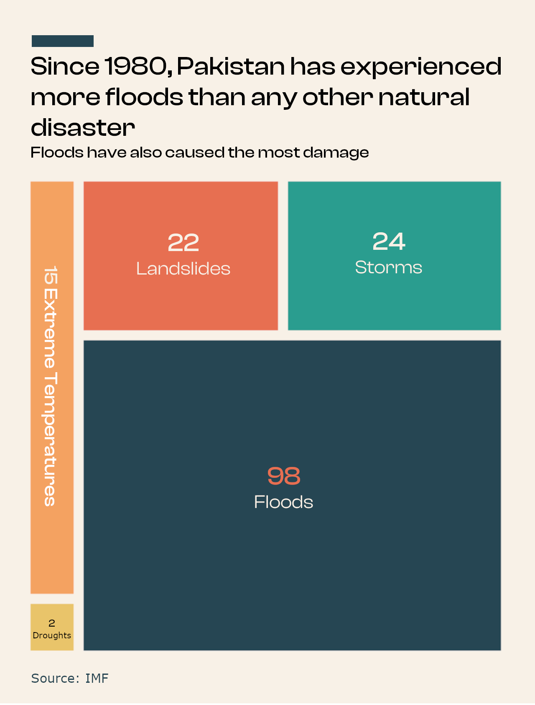

Floods are the most common type of natural disasters. One type of flood that is not particularly well known is the glacial lake outburst flood (GLOF). GLOF events occur when a natural dam holding back a glacial lake breaks, releasing a massive amount of water. The resulting flood can cause significant damage to downstream communities and infrastructure. Pakistan has one of the highest number of communities that are exposed to glacial lake flooding. In 2022, Pakistan experienced 16 glacial lake outbursts in the Gilgit-Baltistan region. This is three times the number of outbursts of the year before. A recent research study published in the journal Nature shows that,
GLOFs have consistently disrupted life and destroyed livelihoods across the Gilgit-Baltistan region. Unfortunately, the government seems least interested in building resilient infrastructure and helping to move vulnerable communities. Our ability to cope with glacial floods is further weakened by corruption and nonexistent building regulations. Public awareness of this hidden danger is crucial to take necessary steps toward ensuring that our communities and infrastructure remain safe.
Last year, Pakistan experienced the worst floods in its history. For millions who were impacted by the floods, the disaster was nothing short of an apocalytic event. The ensuing crisis was so deep that Sherry Rehman, Pakistan’s climate change minister, described the disaster as “the climate catastrophe of the decade” and “a super-flood to beat all”. A third of the country was inundated. Some even declared the floods as the most devastating floods the world has ever seen in the last century.
Ever since the 2022 floods, Sherry Rehman has been rallying the developing countries to seek justice and compensation (of estimated $30 billion cost of rebuilding infrastructure) from the developed economies which are largely held responsible for driving climate change. Whether Pakistan gets compensated or not, the 2022 floods may be just a warning sign for the upcoming disasters. The politicians and policymakers tend to have short-term memory. When the 2010 floods hit Pakistan, they were the worst floods in history at the time. That should have been a wake up call. We are as prepared to face any future calamity today as we were in 2010.
While the climate diplomacy and politics continue on the sidelines, we should already be making efforts on community levels to build resilience. Floods will continue to hit us with more frequency and ferocity. We do not know when the next disaster will hit. But we know that it will hit. The 2022 floods have pushed the country to the brink of economic and political breakdown. The next one may break it completely.